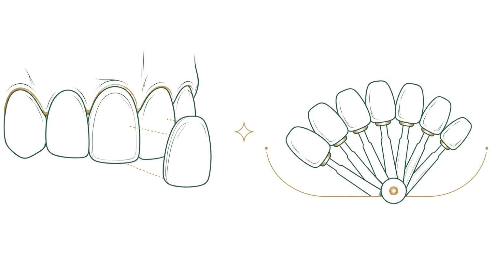

Diş kaplama ve implant, hasta sohbetlerinde en sık karıştırılan iki tedavidir. Oysa ikisi farklı sorunları çözer: kaplama, ağızda var olan bir dişin görünümünü veya işlevini iyileştirirken; implant, tamamen eksik bir dişin yerine yeni bir kök koyar. Bu rehberde iki tedavinin farkını, hangi durumda hangisinin öne çıktığını, kaplama çeşitlerini ve estetik diş hekimliğinin diğer seçeneklerini sade bir dille anlatıyoruz. Sizin için en doğru seçim, muayene sonrasında hekiminizle birlikte belirlenir.
Kaplama nedir, implant nedir?
Aradaki farkı en kısa biçimde özetlemek gerekirse: kaplama "var olan dişi iyileştirir", implant "olmayan dişi yerine koyar". Bu ayrım, iki tedavi arasındaki bütün kararın temelidir.
- Kaplama: Mevcut bir dişin üzerine uygulanan ince porselen veya seramik tabakadır. Dişin rengini, biçimini veya yüzeyini düzeltmek için kullanılır. Diş kökü yerinde ve sağlamdır; yalnızca görünen kısım yeniden şekillendirilir.
- İmplant: Diş tamamen eksikse, çene kemiğine yerleştirilen yapay bir köktür. Üzerine ayrıca bir kron takılır. Yani implant "kökü", kron ise "görünen dişi" oluşturur.
Bu nedenle "kaplama mı implant mı?" sorusunun yanıtı çoğu zaman kişisel tercihe değil, dişin durumuna bağlıdır. Diş ağızda duruyorsa kaplama, diş kaybedilmişse implant gündeme gelir.
Kaplama hangi durumlarda tercih edilir?
Kaplama, dişin kendisi sağlam olduğunda estetik ve biçimsel düzeltmeler için değerlendirilir. Öne çıktığı durumlar şunlardır:
- Beyazlatmayla açılmayan, kalıcı renk değişikliği olan dişler
- Kırık, aşınmış veya kenarı yıpranmış ön dişler
- Dişler arasındaki küçük boşluklar ve hafif biçim bozuklukları
- Şekil ve boy uyumsuzluğu olan gülüş hattı
- Eski, renklenmiş dolguların görünümünü bozduğu dişler
Kaplama, dişin görünen yüzeyini yeniden düzenler; ancak sağlıklı bir diş eti ve sağlam bir kök yapısı gerektirir. Diş eti iltihaplı veya çekilmişse, estetik sonuç hem daha zor elde edilir hem de kalıcılığı azalır. Bu yüzden estetik planlamadan önce diş eti sağlığının değerlendirilmesi ve gerekiyorsa önce diş eti tedavisinin yapılması önemlidir. Diş eti sağlığının estetik tedavilerdeki rolü için diş eti sağlığı rehberimize göz atabilirsiniz.
Kaplama çeşitleri nelerdir?
Kaplama tek bir yöntem değildir; dişteki madde kaybına ve beklentiye göre farklı türler kullanılır:
- Porselen laminate (yaprak) kaplama: Dişin yalnızca ön yüzeyine uygulanan ince bir tabakadır. Sağlam dişlerde, az miktarda aşındırmayla estetik düzeltme sağlar.
- Tam seramik kron: Dişin tamamını saran, daha fazla madde kaybı olan veya kanal tedavisi görmüş dişlerde tercih edilen kaplamadır.
- Zirkonyum destekli kaplama: Dayanıklı bir altyapı üzerine seramik uygulanır; arka bölge dişlerinde ve dayanıklılık gereken durumlarda değerlendirilir.
Hangi türün uygun olduğuna; dişin konumu, kalan madde miktarı ve çiğneme kuvveti birlikte değerlendirilerek hekim karar verir. Amaç, mümkün olan en az madde kaybıyla en uyumlu sonucu elde etmektir.
İmplant hangi durumlarda tercih edilir?
İmplant, bir veya birden fazla dişin tamamen eksik olduğu durumlarda değerlendirilir. Komşu dişlere dokunmadan bağımsız bir kök oluşturması en önemli avantajıdır; ayrıca çene kemiğini uyararak zamanla oluşabilecek kemik erimesini yavaşlatmaya yardımcı olur. Eksik diş uzun süre yerine konmadığında, komşu dişlerin boşluğa doğru kayması ve karşı çenedeki dişin uzaması gibi sorunlar görülebilir; bu yüzden eksikliğin zamanında değerlendirilmesi önemlidir. İmplant tedavisinin ayrıntılarını, kimlere uygun olduğunu ve sürecin nasıl ilerlediğini implant rehberimizde bulabilirsiniz.
Kaplama mı, implant mı? Karar nasıl verilir?
İki tedavi arasında seçim yapmak çoğu zaman "tercih" değil, "durum" meselesidir. Belirleyici olan, dişin ağızda olup olmadığıdır:
- Diş yerinde ve sağlamsa ancak görünümü bozuksa: kaplama yeterli olur.
- Diş çekilmiş veya kaybedilmişse: boşluğu implant (ve üzerindeki kron) doldurur.
- Diş ileri derecede çürük veya kırıksa ama kök kurtarılabiliyorsa: kanal tedavisi sonrası kron bir seçenek olabilir; kök kurtarılamıyorsa çekim ve implant gündeme gelir.
Görüldüğü gibi birçok durumda kaplama ile implant birbirinin alternatifi değil, farklı ihtiyaçların yanıtıdır. Bazı gülüş tasarımlarında ise ikisi birlikte planlanır: eksik bölgeye implant, komşu dişlere estetik kaplama uygulanabilir. Doğru planlama, ağız içi muayene ve görüntülemeyle yapılır.
Estetik diş hekimliğinde diğer seçenekler
Gülüş estetiği yalnızca kaplamadan ibaret değildir. Duruma göre daha az girişimsel yöntemler de değerlendirilebilir:
- Kompozit bonding: Diş renginde dolgu malzemesiyle küçük kırık, boşluk ve biçim düzeltmeleri yapılır. Genellikle tek seansta tamamlanır ve az madde kaybı gerektirir.
- Diş beyazlatma: Yüzeysel ve iç renk değişikliklerinde, dişin kendi yapısını koruyarak tonun açılmasını sağlar. Kaplamaya göre daha koruyucu bir seçenektir.
- Gülüş tasarımı: Dişlerin biçimi, boyu ve diş eti hattı bir bütün olarak planlanır. Kliniğimizde bu planlama dijital ortamda hazırlanır ve uygulanmadan önce sizinle paylaşılır.
Hangi yöntemin uygun olduğu; dişlerin durumu, diş eti sağlığı ve beklentilerinize göre değişir. Daha az madde kaybettiren yöntem mümkünse, dişin korunması adına genellikle o tercih edilir.
Gülüş tasarımı nasıl planlanır?
Estetik bir sonuç, tek bir dişe değil, gülüşün bütününe bakılarak elde edilir. Gülüş tasarımı; dişlerin biçimi, boyu, rengi, diş eti hattı ve bunların yüz hatlarıyla uyumunu birlikte ele alan bir planlama sürecidir. Amaç, kişiye "başkasının gülüşünü" değil, kendi yüzüne en uygun ve doğal görünen gülüşü kazandırmaktır.
Planlama genellikle şu adımlarla ilerler: önce ağız içi muayene ve fotoğraflarla mevcut durum değerlendirilir; ardından dişlerin ölçüsü alınır. Kliniğimizde bu ölçüler dijital ortamda incelenir ve önerilen değişiklikler uygulanmadan önce sizinle paylaşılır. Böylece sonucu, işlem yapılmadan önce görme ve üzerinde konuşma imkânı doğar. Bu yaklaşım, hem beklenti ile sonucun örtüşmesini sağlar hem de gereksiz müdahaleden kaçınmaya yardımcı olur.
Kaplama sonrası yaşam ve alışkanlıklar
Kaplama uygulandıktan sonra günlük yaşamda büyük bir kısıtlama olmaz; ancak kaplamaların uzun ömürlü olması bazı alışkanlıklara dikkat etmeye bağlıdır. Aşırı sert cisimleri (buz, sert kabuklu yiyecekler, kalem gibi) dişlerle kırmak, kaplamalara zarar verebilir. Diş gıcırdatma alışkanlığı olanlarda koruyucu bir gece plağı, kaplamaların yıpranmasını önlemeye yardımcı olur.
Renk konusunda da küçük bir ayrıntı vardır: porselen kaplamalar zamanla renk değiştirmeye doğal dişlerden daha dirençlidir, ancak çevrelerindeki doğal dişler koyu renkli içeceklerden (kahve, çay, kırmızı şarap) etkilenebilir. Bu nedenle gülüşün genel uyumu için tüm dişlerin bakımı önemlidir. Kaplamaların kenarında biriken plak diş eti sağlığını etkileyebileceğinden, düzenli fırçalama ve arayüz temizliği kaplama sonrasında da sürdürülmelidir.
Kaplamaların bakımı ve ömrü
Porselen kaplamalar, doğru uygulandığında ve bakımı yapıldığında uzun yıllar işlev görür. Porselen laminate kaplamalarla ilgili uzun süreli klinik çalışmalar, on yıl ve üzeri sürelerde yüksek başarı oranları bildirmektedir [1]. Bakım, doğal diş bakımından farklı değildir: günde iki kez fırçalama, arayüz temizliği ve düzenli hekim kontrolü [2]. Çok sert cisimleri ısırmak, tırnak yeme veya diş gıcırdatma gibi alışkanlıklar kaplamalara zarar verebilir; gece diş gıcırdatması (bruksizm) olan hastalarda koruyucu gece plağı önerilebilir. Kaplamaların kenarında biriken plak, diş eti sağlığını etkileyebileceğinden düzenli temizlik önemlidir.
Sık sorulan sorular
Kaplama için diş kesilir mi?
Kaplama türüne göre değişir. Porselen laminate kaplamalarda dişin ön yüzeyinden çok az miktarda aşındırma yapılır; tam kaplamada (kron) daha fazla madde uzaklaştırılır. Ne kadar aşındırma gerektiği, dişteki mevcut madde kaybına göre hekim tarafından belirlenir. Amaç mümkün olan en az müdahaledir.
Kaplama mı beyazlatma mı yaptırmalıyım?
Renk değişikliği beyazlatmayla açılabiliyorsa, dişi korumak adına önce beyazlatma değerlendirilir. Beyazlatmanın yetersiz kaldığı, biçim bozukluğu da bulunan durumlarda kaplama gündeme gelir. Karar, dişin durumuna ve beklentinize göre birlikte verilir.
Kaplamalar doğal görünür mü?
Porselen ve seramik malzemeler ışığı doğal dişe benzer biçimde geçirdiği için uyumlu bir görünüm elde edilebilir. Renk ve biçim, komşu dişlerle uyum gözetilerek planlanır. Doğal bir sonuç için gülüş hattının bir bütün olarak değerlendirilmesi önemlidir.
Kaplamanın ömrü ne kadardır?
Uzun süreli klinik çalışmalar, porselen kaplamalarda on yıl ve üzeri sürelerde yüksek başarı bildirir [1]. Ömür; ağız bakımı, ısırma alışkanlıkları ve düzenli kontrollerle yakından ilişkilidir. Zamanla yenileme gerekebilir.
Eksik dişim var, kaplama yaptırabilir miyim?
Kaplama, ağızda var olan bir dişin üzerine uygulanır; tamamen eksik bir diş için kaplama yapılamaz. Bu durumda boşluk implant veya köprü ile değerlendirilir. Uygun seçenek, muayeneyle belirlenir.
Kaplama sonrası hassasiyet olur mu?
Uygulama sonrası ilk günlerde sıcak ve soğuğa karşı geçici bir hassasiyet görülebilir; bu genellikle kısa sürede geriler. Kalıcı veya artan hassasiyet durumunda hekiminize başvurmanız önerilir.
Kaynakça
- Beier US, Kapferer I, Burtscher D, Dumfahrt H. Clinical performance of porcelain laminate veneers for up to 20 years. International Journal of Prosthodontics, 2012; 25(1): 79-85.
- American Dental Association (Amerikan Diş Hekimleri Birliği). Veneers ve ağız bakımı, MouthHealthy hasta bilgilendirme portalı. mouthhealthy.org
- Türk Diş Hekimleri Birliği (TDB). Ağız ve diş sağlığı hasta bilgilendirme kaynakları. tdb.org.tr
Bu konu hakkında soru sormak ister misiniz? Diş hekimlerimize dilediğiniz saatte yazabilirsiniz.
Bize yazın